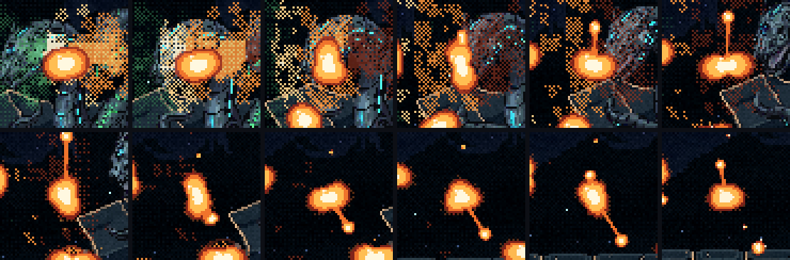
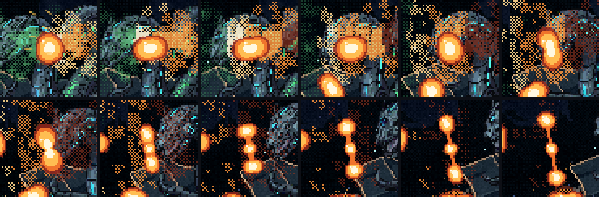
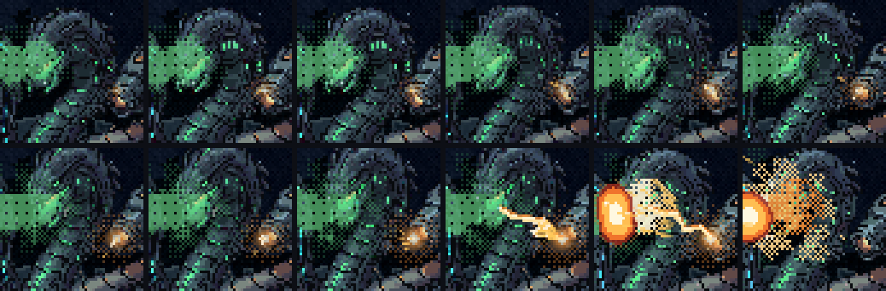
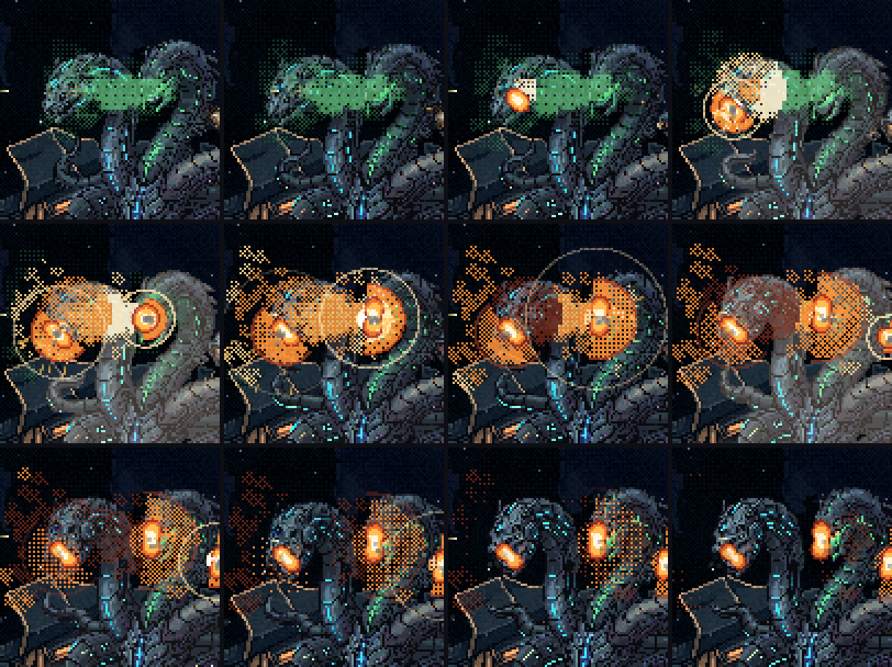

A Serpente: a geleia de plasma
01/11/2026 · rodada 6 do gás e da faísca · nada foi commitado.
O que você disse sobre a folha anterior:
- "bolas maiores como se fossem geleias [...] e se desfazer ou desgrudar em pequenos pedaços [...] quero o comportamento de algo viscoso, como se fosse liquido"
- "Quando a nave explode o gas com o tiro, precisa ficar claro que o jogador conseguiu quebrar isso.... talvez uma explosão apontando para a cara das serpentes?"
- "não existe nada saindo da cabeça laranja que mostre que é ela fazendo isso"
O que mudou:
- As bolas viraram geleia de plasma: maiores, balançam o tempo todo e se desfazem como líquido grosso.
- Quando a nave acende a nuvem, o fogo corre de volta pelo sopro e a geleia explode na cara das três cabeças, e fica grudada queimando.
- A laranja carrega antes de cada faísca: a boca acende, solta fagulhas e o arco salta dela até o gás.
A geleia
- Ela balança como uma gota de verdade. A explosão que a arremessa a amassa no sentido do empurrão, e ela sai tremendo. A pele queimando ferve, então ela nunca fica parada. As gotas pequenas tremem mais rápido e assentam antes, como na física dos líquidos.
- Ela se desfaz como líquido grosso: um lado incha, um fio se forma entre o pedaço e o resto, o fio afina conforme estica e arrebenta, vira uma gotinha no meio, e as duas pontas voltam com o tranco.
- Ela não quica: a que bate no casco se espalha, gruda e queima ali até apagar em fumaça.
- Ela esfria: escurece, encolhe um pouco e apaga em fumaça. O alcance continua limitado.
Fiz dois jeitos de ela se desfazer:


A faísca da laranja
Por 0,6 s antes de cada faísca, a boca da laranja acende e pulsa, crescendo, e solta fagulhas pela frente. Na hora da faísca, ela dá um clarão e um arco quente salta da boca dela até a raiz do gás, junto com um jato de fagulhas. A nuvem acende ali.

Ela continua no idle: a animação da laranja faiscando (e a da verde soprando) eu gero depois que a mecânica for aprovada. O brilho e as fagulhas ficam no lugar da boca dela.
O contra-ataque
- O fogo corre de volta pelo sopro. A nave acende a nuvem pelo lado dela, e a chama segue o gás até a fonte, na boca delas. É o que acontece com uma mangueira de gás que pega fogo na ponta.
- A explosão vai na cara. O gás em frente a cada cara é arremessado nela, para longe do ponto aceso: uma bola de geleia por cabeça, a da verde maior. Cada uma estoura apontada para a cara, com um anel de choque, gruda e fica queimando, soltando fumaça.
- O golpe aparece: ela pisca, é empurrada para trás, a tela treme, e a verde para de soprar. A habilidade acabou.
- Nada volta para a nave. O gás do lado da nave é ralo e só pisca. Na folha anterior, alguns bolsões vinham para a nave; agora a explosão vai toda nelas, como você pediu.

O tempo para acender e a dica de calor (os pontos âmbar onde os tiros passam) ficaram como na folha anterior.
Para você decidir
- A geleia: A (pinga pelo caminho) ou B (racha em três)? Ou uma mistura, por exemplo a B que depois pinga?
- O contra-ataque: agora dá para ver que o jogador quebrou a habilidade?
- A faísca: agora dá para ver que é a laranja que acende o gás?